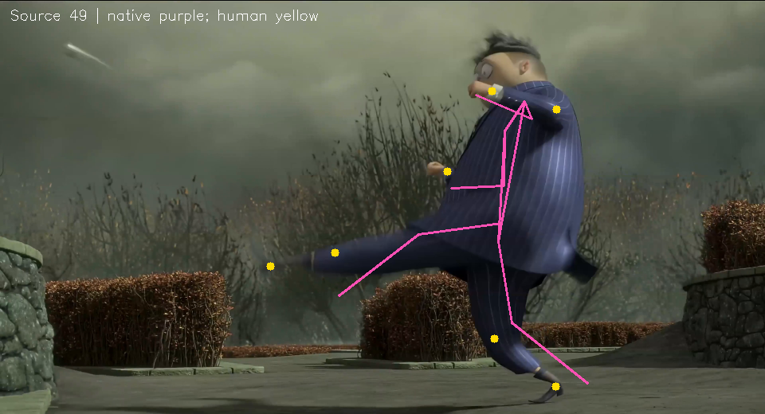
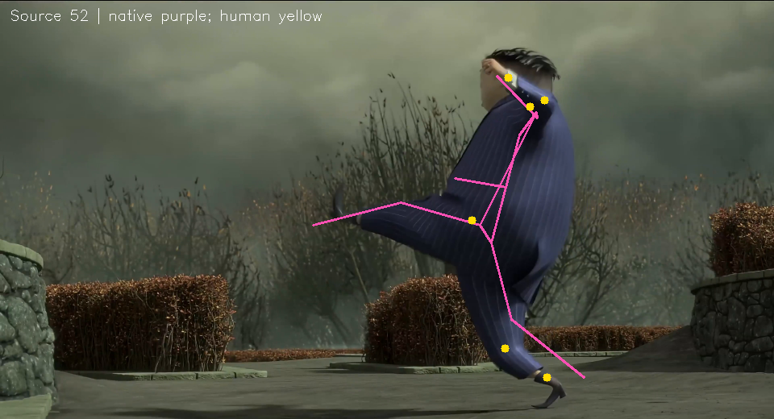
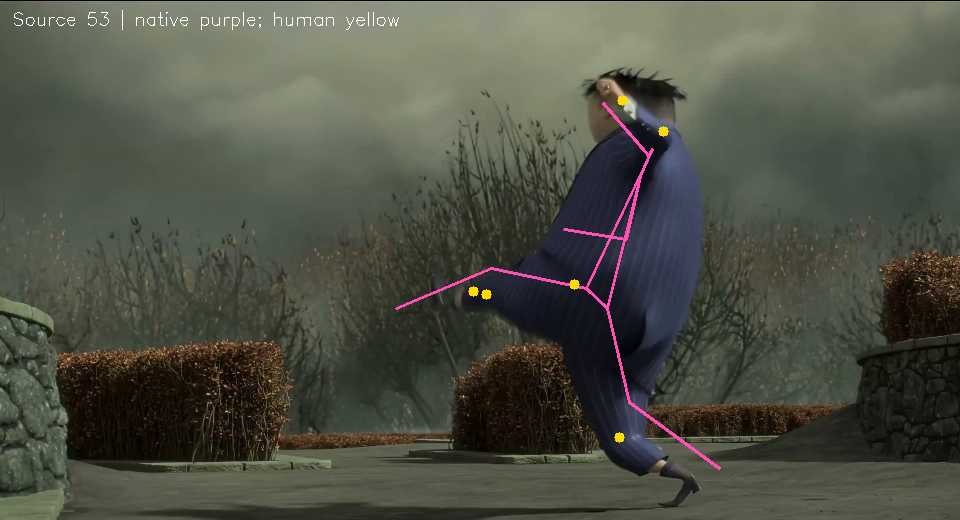

这些点不自动修改。紫色为原生三维投影，黄色为人工点。膝踝可能是衣物/鞋部代理点，需确认是否应单独建立鞋底代理点。
| 源帧 | 关节 | 原生误差 | 二维误差 | 复核理由 |
|---|---|---|---|---|
| 49 | left_knee | 108.21 | 79.99 | 膝/踝被裤腿或鞋面遮挡，可能标到了轮廓或鞋部代理点；请确认是否应改为骨关节中心，或另建鞋底代理点。 |
| 49 | left_ankle | 93.8 | 32.85 | 膝/踝被裤腿或鞋面遮挡，可能标到了轮廓或鞋部代理点；请确认是否应改为骨关节中心，或另建鞋底代理点。 |
| 49 | right_ankle | 40.43 | 15.49 | 膝/踝被裤腿或鞋面遮挡，可能标到了轮廓或鞋部代理点；请确认是否应改为骨关节中心，或另建鞋底代理点。 |
| 50 | right_knee | 38.56 | 21.72 | 膝/踝被裤腿或鞋面遮挡，可能标到了轮廓或鞋部代理点；请确认是否应改为骨关节中心，或另建鞋底代理点。 |
| 51 | right_knee | 44.13 | 22.9 | 膝/踝被裤腿或鞋面遮挡，可能标到了轮廓或鞋部代理点；请确认是否应改为骨关节中心，或另建鞋底代理点。 |
| 51 | right_ankle | 39.02 | 7.69 | 膝/踝被裤腿或鞋面遮挡，可能标到了轮廓或鞋部代理点；请确认是否应改为骨关节中心，或另建鞋底代理点。 |
| 52 | right_knee | 37.06 | 3.16 | 膝/踝被裤腿或鞋面遮挡，可能标到了轮廓或鞋部代理点；请确认是否应改为骨关节中心，或另建鞋底代理点。 |
| 52 | right_ankle | 45.89 | 6.88 | 膝/踝被裤腿或鞋面遮挡，可能标到了轮廓或鞋部代理点；请确认是否应改为骨关节中心，或另建鞋底代理点。 |
| 53 | left_ankle | 78.82 | 17.54 | 膝/踝被裤腿或鞋面遮挡，可能标到了轮廓或鞋部代理点；请确认是否应改为骨关节中心，或另建鞋底代理点。 |
| 53 | right_knee | 36.1 | 2.58 | 膝/踝被裤腿或鞋面遮挡，可能标到了轮廓或鞋部代理点；请确认是否应改为骨关节中心，或另建鞋底代理点。 |
| 55 | right_knee | 31.03 | 42.56 | 膝/踝被裤腿或鞋面遮挡，可能标到了轮廓或鞋部代理点；请确认是否应改为骨关节中心，或另建鞋底代理点。 |
| 56 | right_shoulder | 39.14 | 22.5 | 人工点与原生回归关节存在明显偏差；请确认是否标的是骨关节中心而非服装/轮廓点。 |
| 57 | left_wrist | 42.36 | 3.66 | 人工点与原生回归关节存在明显偏差；请确认是否标的是骨关节中心而非服装/轮廓点。 |


